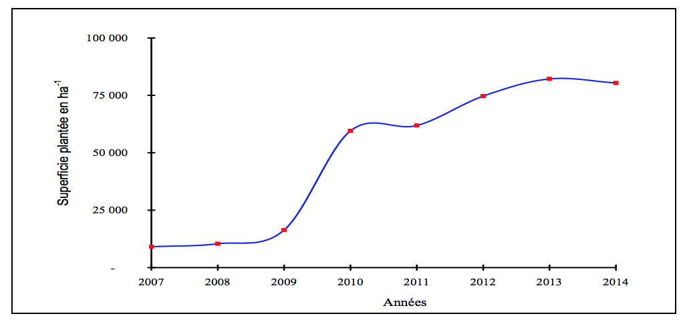
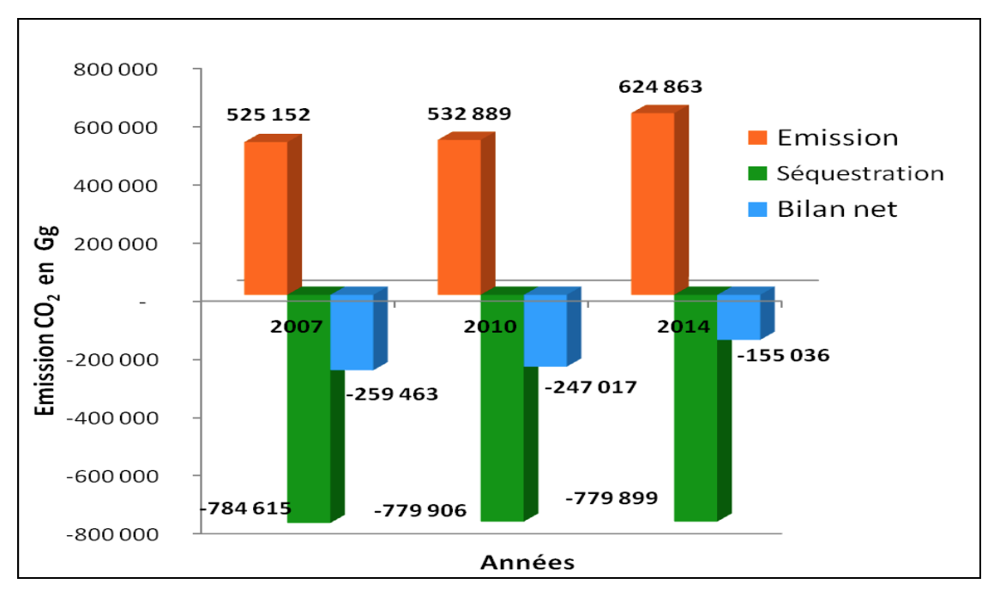

Un Peuple -Un But -Une Foi
21ème Conférence des Parties
Septembre 2015
RESUME EXECUTIF
L’économie du Mali repose essentiellement sur l’exploitation des ressources naturelles. La croissance démographique (3,6 %/an) et les contraintes climatiques ont entraîné une surexploitation et une dégradation de ces ressources. Les deux tiers du pays sont arides et semi arides dominés par les problèmes de désertification. Les risques naturels se sont accrus avec l’intensification des changements climatiques: sécheresses à répétition, inondations, vents forts, feux de brousse, déstabilisation du régime des pluies. L’agriculture qui est la plus touchée représente 45% du PNB et occupe environ 80% de la population active.
Cette situation est d’autant plus grave que les scénarios climatiques à l’horizon 2100 prévoient en moyenne une augmentation des températures de 3°C et une diminution des pluies de 22% sur l’ensemble du pays.
Au plan macro-‐économique le pays intègre les changements climatiques dans les processus de planification, notamment dans la mise en œuvre du Cadre Stratégique pour la Croissance et la Réduction de la Pauvreté (CSCRP), dans la Politique Nationale de Protection de l’Environnement et, depuis 2011, dans la Politique Nationale sur les Changements Climatiques.
C’est sur ces bases et en s’appuyant sur les services techniques nationaux qu’a été élaborée la CPDN du Mali.
Les prévisions des données techniques pour le calcul des gaz à effet de serre (GES) entre 2015 et 2030 se sont faites au cours de réunions de concertation au niveau sectoriel pour les trois secteurs principaux d’émissions de gaz à effet de serre (agriculture, foresterie et changement d’utilisation des terres, énergie) et au niveau multisectoriel.
La nature des engagements du Mali en matière d’atténuation est celle d’un scénario d’atténuation (dont un sous-‐scénario inconditionnel au cas où le pays serait le seul investisseur) basé sur la réduction des émissions de GES par rapport à un scénario de base (BAU). Les gaz considérés sont le CO2, le CH4 et le N2O.
La période du scénario de base est 2015-‐2030 et celle du scénario d’atténuation 2020-‐2030.
Le Mali reste un puits de gaz à effet de serre pour tous les scénarios, la forêt jouant un rôle majeur pour le niveau de séquestration. Les niveaux des ambitions de réduction des GES du scénario d’atténuation par rapport au scénario de base sont de 29% pour l’agriculture, 31% pour l’énergie et 21% pour les forêts et le changement d’utilisation des terres Le coût global du scénario d’atténuation conditionnel s’élève à 34,68 milliards $US (1,16 pour l’énergie, 20,6 pour l’agriculture, et 12,92 pour les forêts)
En matière d’adaptation, la vision du Mali est de faire de l’économie verte et résiliente aux changements climatiques une priorité.
Pour la période 2015-‐2020, le coût des besoins s’élève à 1,062 Milliards de $US. Il correspond au financement des cinq grands programmes qui ont été exposés au sommet mondial sur le climat en septembre 2014 à New York. Ces programmes portent notamment sur la foresterie, l’agriculture intelligente et les énergies renouvelables.
Au cours de la même période, les besoins sont basés sur des objectifs de développement durable axés sur la poursuite et l’intensification des programmes ci-‐dessus complétés notamment par:
Une stratégie de financement durable de l’environnement et des changements climatiques est en cours d’élaboration.
La mobilisation des ressources pour la mise en œuvre des programmes identifiés dans la CPDN, constitue une conditionnalité pour que le Mali puisse d’une part atteindre ses objectifs en matière de réduction des GES et, d’autre part, adapter ses systèmes de production, ses systèmes écologiques et ses systèmes sociaux aux changements climatiques. C’est dans ce contexte que le Mali amorcera une trajectoire de développement économique sobre en carbone et résilient aux changements climatiques, contribuant de plus aux efforts mondiaux de stabilisation des gaz à effet de serre, au titre de la responsabilité commune mais différenciée.
|
Nature des engagements |
Scénario d’atténuation basé sur la réduction des émissions de GES par rapport à un scénario de base reflétant la tendance normale des affaires (scenario Business-As-Usual BAU) |
|
Champ d’application |
|
|
Gaz considérés |
Dioxyde de carbone CO2 Méthane CH4 Oxyde nitreux N2O |
|
Présentation des émissions |
Kilo tonne (kT) pour le CO2, ou Kilo tonne équivalent de CO2 (kTeq CO2) pour tous les gaz |
|
Période de référence |
2007-2014 |
|
Période de mise en œuvre |
2015-2030 pour le scénario de base 2020-2030 pour le scénario d'atténuation |
|
Méthodologie pour l'estimation des émissions |
Les inventaires des émissions de GES ont été réalisés suivant les lignes directrices révisées du GIEC de 2006 |
|
Secteurs couverts |
Energie-Agriculture-Forêts et changements d'utilisation des terres |
Le Mali est un puits de carbone et le restera au-‐delà de 2030. Mais le Mali considère qu’il doit contribuer au maximum de ses possibilités à l’ambition collective de limiter d’ici à la fin du siècle l’augmentation de la température globale sous 2°C par rapport à l’ère industrielle afin de limiter dans le pays, les impacts négatifs des changements climatiques sur l’agriculture et sur l’occurrence des risques de catastrophes naturelles (sécheresses, inondations, feux de brousse).
Le niveau des ambitions de réduction des GES du scénario d’atténuation par rapport au scénario de base (29% pour l’agriculture, 31% pour l’énergie et 21% pour les forêts) implique des actions ambitieuses favorables au développement du pays et à l’amélioration des systèmes de production à savoir entre autres: accélération de la prise en compte des énergies renouvelables dans le mix énergétique, amélioration des performances des processus de production agricole, réduction de la déforestation et reboisement intensif.
|
Population |
14,5 millions |
|
Croissance démographique |
3,6 % |
|
Taux d'urbanisation |
26,8 % |
|
Population rurale |
73 % |
|
Taux de croissance du PIB |
7,2 % |
|
Taux national de pauvreté |
46,9% |
|
Taux national d'accès à l'électricité (2014) |
34,89 % |
|
Consommation d'énergie par habitant en 2010 |
0,20 tep/habitant |
|
Consommation électrique annuelle en 2009 |
59,36 Kwh/habitant |
|
Puissance totale installée en MW en 2010 |
402 MW |
|
Estimation de la demande annuelle en électricité (en 2010) |
182,4 MW |
|
Part des EnR dans la production nationale d'électricité en 2010 |
3% |
|
Part du Mali à l'émission mondiale des GES |
0,06% |
L'économie du Mali repose essentiellement sur l’exploitation des ressources naturelles. La croissance démographique et les contraintes climatiques ont entrainé une surexploitation et une dégradation de ces ressources. Le Mali considère que le maintien de l’intégrité des milieux naturels est un acte écologique mais aussi un acte éminemment économique.
Les deux tiers du pays sont arides et semi arides domines par les problèmes de désertification qui se sont accentues à partir de la deuxième moitié du 20ème siècle avec la montée en charge des changements climatiques.
Les risques naturels se sont accrus avec l’intensification des changements climatiques: sécheresses à répétition, inondations, vents forts, feux de brousse, déstabilisation du régime des pluies entrainant une incertitude sur les calendriers agricoles. L'agriculture qui est la plus touchée représente 45% du PNB et occupe environ 80% de la population active, elle demeure très sensible aux changements climatiques.
Le Mali, s'est engagé à combattre les changements climatiques en signant la convention cadre des Nations Unies sur les changements climatiques (28 décembre 1994) et le Protocole de Kyoto (27 janvier 1999).
Le pays a élaboré son Programme d'Action National d’Adaptation (PANA) aux effets néfastes des changements climatiques en 2007. II a présenté à la convention sa première et sa deuxième communication nationale; la troisième communication est en cours d'élaboration.
Le Mali a élaboré sa Politique Nationale sur les Changements Climatiques en 2011, assortie d'une stratégie et d'un plan d'actions.
Au plan macro-économique le pays intègre la dimension environnementale en général et des changements climatiques en particulier dans les processus de planification, notamment dans la mise en couvre du Cadre Stratégique pour la Croissance et la Réduction de la Pauvreté (CSCRP), qui constitue le cadre unique de référence de l’ensemble des politiques de développement du pays pour la période 2012-2017.
II a également élabore un Cadre Stratégique pour la Réalisation d'un Mali Résilient et Vert qui permettra la réalisation · effective d'une économie résiliente et peu génératrice de carbone tout en donnant une impulsion nouvelle à ses objectifs de croissance économique et de réduction de la pauvreté.
Des initiatives nationales concernent également la marche carbone. Elles sont orientées vers des technologies « propres » ou à faible émission de carbone, essentiellement des énergies renouvelables.
Sur le plan institutionnel, le Ministère de l'Environnement, de l’Assainissement et du Développement Durable a en charge la prise en compte des changements climatiques. II a confié à l’Agence de l'Environnement et du Développement Durable (AEDD), créée en 2010, la mission de gérer les différents aspects des changements climatiques.
Le Mali a également mis en place un Comité National des Changements Climatiques (CCNC) qui est l’instance de concertation, d'orientation et de mobilisation des forces vives du pays. Ce comité est consulté régulièrement pour accompagner les équipes de préparation de la contribution nationale, notamment à travers ses groupes thématiques.
Globalement, les dernières estimations montrent que l’Afrique est responsable d'environ 3% des émissions mondiales de GES et le Mali environ 0.06%. Même si les émissions sont amenées à augmenter au fur mesure que le pays se développe, le Mali reste encore aujourd'hui un puits de gaz effet de serre (1ere, 2eme et 3eme Communication Nationale (CN) du Mali).
Le profil des émissions des trois principaux gaz calculés lors de l’élaboration de la Troisième Communication Nationale (TCN) du Mali en 2010 est reporté dans le tableau 1.
Tableau 1: Emissions et Séquestration des trois principaux GES (2010) au Mali
| Dioxyde de carbone CO2 |
Méthane CH4 |
Oxyde azoteux N2O |
||
|---|---|---|---|---|
| Energie | (kT) | 2676 | 63,81 | 0,75 |
| Total Energie (KTéq CO2) | 4289 | |||
| Agriculture | (kT) | 627 | 114 | |
| Total Agriculture (KTéq CO2) | 48507 | |||
| Forets et changements d'affectation des terres | (kT) | -245 177 | ||
| Total Forets et changement d'affectation des terre (KTéq CO2) | -244 799 | |||
| Total général des émissions | (KTéq CO2) | -192 003 | ||
Les valeurs positives traduisent les émissions et les valeurs négatives la séquestration des GES.
L'analyse de l’inventaire des émissions de GES du Mali met en relief l’existence d'un important potentiel d'atténuation des émissions de GES, d'une part par la réduction des émissions de GES dans les principaux secteurs émetteurs, à savoir l’agriculture et l’utilisation agricole des terres ainsi que l’énergie, et d'autre part par le renforcement des capacités d'absorption de GES par les forêts. Ce sont ces mesures qui constitueront les principaux éléments de la CPDN-MALI.
La méthodologie utilisée pour ces scénarios exploite les outils MAGICC et SCENGEN du GIEC.
Les résultats obtenus sont les valeurs escomptées, sur l’ensemble du pays des paramètres climatiques aux horizons temporels compris entre 2015 et 2100 pour la pluviométrie et la température.
Pour toutes les localités du Mali, le scénario climatique le plus plausible prévoit une diminution de la pluviométrie dont les taux de pertes par rapport à la normale sont reportés dans le tableau 2.
Tableau 2: Diminution de la pluviométrie
| Annnée | 2020 | 2025 | 2030 | 2050 | 2100 |
|---|---|---|---|---|---|
| Perte en % | 1 à 5 | 2 à 6 | 5 à 8 | 5 à 10 | 22 |
Les résultats de cette étude ont montré que pour toutes les localités on assisterait aune diminution de la pluviométrie qui se traduirait par un déplacement des isohyètes vers le sud (Figure 1).
Figure 1: Diminution de la pluviométrie et déplacement des isohyètes vers le Sud dans la localité de Sikasso entre 1960 et 2100
Les températures seraient par contre en hausse dans toutes les localités du Mali avec un taux moyen donne dans le tableau 3.
Tableau 3: Hausse des températures
| Année | 2020 | 2025 | 2030 | 2050 | 2100 |
|---|---|---|---|---|---|
| Augmentation température | 0,5°C | 1°C | 1,5°C | 1,7°C | 3°C |
Selon l’analyse des évènements extrêmes durant la période très humide du mois de juillet au Mali, la température maximale qui était de 30,5°C pour la période 1961-1990 serait pour le même mois de:
(i) 32,5°C en 2050 et l’occurrence des températures supérieures à cette valeur serait de 40%.
(ii) 34,5°C en 2100 et l’occurrence des températures supérieures a cette valeur serait de 36%. L'analyse effectuée a montré une augmentation de cette probabilité entre 2025 et 2100.
Dans le cas d'une diminution de 20% de la pluviométrie (comme le prévoit le scénario plausible construit à partir des années 2075), on obtiendra une pluviométrie semblable à celle de la période sèche dans les mêmes zones climatiques.
Des situations de sécheresse seraient constatées sur la première moitié de l’hivernage (mois de mai, juin et juillet) à partir de l’horizon 2025 sur toutes les stations du pays pour une sensibilité climatique moyenne. Les mêmes situations pourraient s'installer dès l'horizon 2020 si la réaction du climat aux perturbations devenait plus rapide.
Suite à ces déficits pluviométriques, les sources d'approvisionnement naturelles en eau des communautés constituées par les eaux de surface et les eaux souterraines superficielles seront affaiblies dans une certaine proportion.
L’estimation des émissions de GES a été faite sur la base de la méthodologie révisée de 2006 et les bonnes pratiques de GIEC. A cet effet l’outil informatique a été utilisé à travers les feuilles de calcul au format Excel développées par le GIEC pour chacun des secteurs concernés.
L’élaboration des prévisions et du choix des données se sont faites au cours de réunions de concertation. Elles ont lieu au niveau sectoriel pour les trois secteurs principaux d’émissions de gaz à effet de serre (agriculture, foresterie et changement d’utilisation des terres, énergie) et au niveau multisectoriel.
Ces réunions ont permis:
Dans une perspective de moyen terme pour assurer le développement durable du pays, bien qu’ils n’émettent que très peu de GES, deux autres secteurs ont été considérés: la gestion des déchets et l’industrie. Ils ne sont pas intégrés dans la CPDN mais feront l’objet de traitements ultérieurs.
Les calculs de GES dans la CPDN sont effectués par secteur puis agrégés sur trois périodes.
La réalisation du scénario d’atténuation est conditionnée par la mise en œuvre de moyens humains, matériels et financiers du Mali et de ses partenaires bilatéraux et multilatéraux; c’est donc un scénario conditionnel d’atténuation. Le sous-‐scénario qui serait réalisé si le Mali était le seul investisseur est le scénario inconditionnel d’atténuation.
Le Mali dispose de potentiels d’énergies renouvelables significatifs dont:
Malgré ce potentiel, le secteur énergétique est très peu performant au regard de ses principaux indicateurs notamment:

Figure 2: Structure de la consommation finale d’énergie au Mali en 2010
Les trois communications nationales du Mali (1ère en 1995, 2ème en 2000, 3ème en cours d’élaboration) ont toutes établi que parmi les trois secteurs les plus émetteurs de gaz à effet de serre (GES), figure celui de l’énergie. L’émission de GES due à ce secteur est en constante progression (Figure 3). Entre 1995 et 2000, l’accroissement a été de 60,32%, tandis qu’il a atteint 83,63% entre 2000 et 2012. Dans la période 1995-‐2012, les émissions de CO2 sont passées de 945 kTà 2782 kT, soit un accroissement de plus de 190% sur les 17 années.

Figure 3 : Evolution des émissions de GES dans le secteur de l’énergie
La répartition des émissions par rapport aux sous-‐secteurs de l’énergie est montrée sur la figure 4. L’analyse de cette répartition montre que le sous-‐secteur résidentiel occupe la première place avec la consommation accrue de biomasse, notamment le bois énergie comprenant le bois de feu et le charbon de bois (82,20% des émissions significatives du secteur en 2012). Le sous-‐secteur des transports vient en seconde position (12,25% des émissions significatives du secteur en 2012) avec la consommation de combustible fossile (essence et gasoil). Le sous-‐secteur de la transformation occupe la troisième, particulièrement pour la consommation de combustible dans la production de l’électricité (4,73% des émissions du secteur en 2012).La figure 5 représente l’évolution des GES dans le secteur de l’Energie entre 2007 et 2014.

Figure 4: Répartition des émissions de CO2par sous-‐secteur de l’Energie en 2012.

Figure 5: Evolution des GES dans le secteur de l’Energie entre 2007 et 2014
Entre 2007 et 2014 les émissions de GES dues à la production et à la consommation d’énergie ont évolué de 3434 kTéq CO2 à 5268 kTéq CO2, soit un accroissement moyen annuel de 6,44 %.
Au regard de ce qui précède, les politiques d’atténuation d’émissions de GES dans le secteur de l’énergie, doivent beaucoup s’orienter vers le résidentiel, les transports et les industries énergétiques.
L’application de l’efficacité énergétique associant l’utilisation rationnelle de l’énergie, l’économie d’énergie et la maîtrise de l’énergie devrait permettre une décroissance significative des émissions de GES à l’horizon 2030. L’association de l’ensemble de ces mesures permet de construire les scénarios de base et d’atténuation.
Selon la méthodologie du GIEC utilisée pour le calcul des émissions de GES, le secteur de l’Agriculture regroupe les sous-‐secteurs suivants:
Les émissions de GES en TE-‐CO2 du secteur de l’Agriculture pour la période 2007-‐2014 sont rapportées dans le tableau et les figures ci-‐dessous. Le sous-‐secteur du brûlage des savanes et des résidus agricoles émet uniquement du CO dont le pouvoir de réchauffement par rapport au CO2 n’est pas défini. De ce fait, il n’est pas pris en compte dans ce tableau.
Tableau 4: Synthèse des émissions en TE CO2
|
Années |
Elevage |
Engrais |
Riziculture |
TOTAL |
|
2007 |
8 904 000 |
29 450 000 |
1 554 000 |
39 908 000 |
|
2010 |
10 206 000 |
34 720 000 |
2 016 000 |
46 942 000 |
|
2014 |
11 718 000 |
42 160 000 |
2 163 000 |
56 041 000 |
|
Moyenne |
10 276 000 |
35 443 333 |
1 911 000 |
47 630 333 |

Figure 7: Répartition sous sectorielle des émissions
La synthèse des émissions du secteur montre que les principaux sous secteurs d’émission de GES de l’agriculture sont ceux des engrais chimiques (74%), de l’élevage (22%) et de la riziculture irriguée (4%). Les mesures d’atténuation des émissions de GES dans le secteur de l’Agriculture porteront sur ces sous secteurs.
La zone forestière prise en compte par le secteur comprend les espaces boisés et les savanes.
Les principales données utilisées pour l’évaluation des gaz sont la superficie des zones forestières, la superficie des plantations forestières, la quantité de bois exploitée, et la superficie des sols minéraux.
La plantation forestière est une activité importante au Mali marquée par une forte progression des superficies reboisées. Entre 2007 et 2014, les superficies plantées ont passé de 9 079 hectares à 80 387 hectares, soit une multiplication par 9.

Figure 7: Evolution de la superficie des plantations forestières réalisée au Mali entre 2007 et 2014.
Dans le secteur de la Foresterie et des Changements d’Affectation des Terres la séquestration de GES, d’une valeur moyenne de 781 473 Kilo Tonnes de CO2 par an, est assurée uniquement par la zone forestière. En revanche les émissions, d’une valeur moyenne de 560 976 Kilo Tonnes de CO2 par an, proviennent des sols minéraux, affectés aux systèmes d’agriculture et du sylvopastoralime, et des terres converties (prairies et surfaces défrichées).
Tableau 5: Synthèse des émissions de GES du secteur en KT CO2
|
Années |
Emission |
Séquestration |
Bilan net |
|
2007 |
525 152 |
‐ 784 615 |
‐ 259 463 |
|
2010 |
532 889 |
‐ 779 906 |
‐ 247 017 |
|
2014 |
624 863 |
‐779 899 |
‐ 155 036 |

Figure 8: Bilan des émissions du secteur Forêts –changements d’affectation des terres en KT CO2 (Gg CO2)
Le bilan net du secteur foresterie et des changements d’affectation des terres est un bilan de séquestration des GES, d’une valeur moyenne de 220 505 Kilo Tonnes de CO2 par an, qui permet au Mali d’être un puits de carbone.
La faible performance du bilan énergétique et les potentialités significatives énergétiques du Mali ont motivé l’élaboration et la mise en œuvre à court et moyen termes de politique, de programmes et de plans dans le sens d’une efficacité énergétique associant l’utilisation rationnelle de l’énergie, l’économie d’énergie et la maîtrise de l’énergie. Ces actions concernent tous les aspects du secteur de l’Energie, de la production à la consommation.
Les scénarios des émissions de GES dans le secteur de l’Energie ont été développés sur la base de la Politique nationale de l’énergie et des stratégies afférentes ainsi que des actions qui en découlent.
Les principales actions concernées sont:
Les programmes et projets ci-‐dessus permettent d’obtenir les réductions de GES synthétisées dans la figure suivante:

Figure 9: Evolution des émissions dans les situations de base et d’atténuation de 2015 à 2030
Le scénario de base montre que les émissions de GES vont croitre de 3 400 kTéq CO2 en 2015 à 4 750 kTéq CO2 en 2020 pour atteindre 9269 kTéq CO2 en 2030. Cela donne un accroissement moyen annuel de 6,91% entre 2015 et 2030.
Les conséquences des mesures d’atténuation entre 2020 et 2030 permettront de rabaisser le niveau des émissions de 4750 kTéq CO2 en 2020 à 6336 kTéq CO2 en 2030. Ainsi, par rapport au scénario de base, les émissions atteindront une baisse, par la scénario d’atténuation, de 31,6% en 2030.
Les ambitions de réduction des émissions du scénario d’atténuation sont de 1486 kTéq CO2 en 2025, soit une réduction de 22,4%, et 2933 kTéq CO2 en 2030, soit une réduction de 31,6%. Le coût correspondant est de 580 millions de $US sur cinq ans, soit 1,16 milliard de $ US sur les dix ans.
Les politiques, plans et programmes sur lesquels s’appuie cette prospective sont:
Les principales actions concernées qui en découlent sont:
Les programmes et projets ci-‐dessus permettent d’obtenir les réductions de GES synthétisées dans la figure suivante:

Figure 10: Evolution des émissions dans les scénarios de base et d’atténuation de 2015 à 2030
Les ambitions de réduction des émissions sont de 9 759 kTéq CO2 en 2025 et 25 400 kTCO2 en 2030. Le coût de ce scénario d‘atténuation conditionnel s’élève à 20,6 milliards de $US.
Dans le secteur de l’agriculture, les mesures d’atténuation des émissions de GES, les plus appropriées concernent trois sous-‐secteurs qui sont: la riziculture irriguée, l’élevage et la gestion des engrais.
Pour le sous secteur de la riziculture irriguée, l’atténuation sera focalisée la gestion de l’eau par l’irrigation intermittente afin d’éviter l’inondation permanente des terres rizicoles, source d’émission par fermentation.
Pour les sous secteurs de l’élevage et des engrais chimiques, la mesure d’atténuation sera axée sur la substitution de l’urée à forte teneur en azote par la fumure organique dont la production permettra de réduire les émissions des fumures liées à la décomposition anaérobie.
Le coût lié à ces émissions de GES dans le secteur de l’agriculture s’élève à 20,6 milliards de $US pour le scénario d’atténuation.
Les politiques, plans et programmes sur lesquels s’appuie cette prospective sont:
Ces politiques et stratégies sont mises en œuvre par des projets dont ceux présentés ci-‐dessous:
|
Projet |
Actions |
|
Projet Alliance Globale sur le Changement Climatique |
Inventaires forestiers régionaux Système informatique de gestion des données forestières Reboisement et régénération des forêts |
|
Programme Gestion Décentralisée des Forêts |
Plans d'aménagement et de gestion de massifs forestiers Exploitation rationnelle du bois énergie dans ces massifs |
|
Programme de Développement Durable dans le Delta du Niger |
Plans d'aménagement et de gestion des Forêts Classées Plantations de Bosquets villageois et d'arbres fruitiers |
|
Projet de Lutte Contre l'Ensablement du Fleuve Niger |
Fixation de dunes Plantations forestières de bois de service |
|
Projet d'Extension et de Renforcement du Système des Aires Protégées |
Gestion d'aires protégées Création de couloirs de migration de la faune Formation de villageois |
|
Foyers améliorés (MDP) |
Vulgarisation de foyers économes en bois de chauffe |
|
Valorisation énergie (MDP) |
Production de briquettes à travers les sous-‐produits agricoles. |
|
Reboisement et production de biocarburant (MDP) |
Plantation de Pourghère pour l'electrification rurale Plantation de Jatropha dans les systèmes agraires |
|
Boisement (MDP) |
Plantation d'Acacia Sénégal |
Les programmes et projets ci-‐dessus permettent d’obtenir les réductions de GES synthétisées dans la figure suivante:

Figure 11: Courbes des bilans nets (séquestration) des scénarios de base et d’atténuation pour la période 2015-‐2030
Le scénario de base est mis en œuvre par des plantations forestières pour un coût total entre 2015 et 2030 de 1 229 millions $US
Le scénario d’atténuation conditionnel est mis en œuvre par les mesures suivantes:
Le coût total du scénario d’atténuation conditionnel est de 12 920 millions $US
Les secteurs de l’énergie, de l’agriculture, de la foresterie et du changement d’affectation des terres sont des secteurs émetteurs en GES. Le secteur de la foresterie et du changement d’affectation des terres émet et séquestre mais son bilan net est en séquestration.
La synthèse des émissions de GES des trois secteurs énergie, agriculture et foresterie et changements d’affectation des terres est donnée dans le tableau 6 ci-‐dessous pour le scénario de base et pour le scénario d’atténuation (versions conditionnelle et inconditionnelle).
Tableau 6: Bilan net des prévisions d’émissions et séquestration en KT Eq CO2:
|
Années |
Scénario de base |
Scénario d'atténuation conditionnelle |
Scénario inconditionnel |
|
2015 |
‐155 552 814 |
|
|
|
2020 |
‐109 788 619 |
‐109 788 619 |
‐109 788 619 |
|
2025 |
‐69 327 889 |
‐95 494 305 |
-‐79 727 072 |
|
2030 |
‐29 242 410 |
‐84 937 087 |
‐33 628 772 |

Figure 12: Evolution des émissions du scénario de base, du scénario d’atténuation conditionnel et du scénario d’atténuation inconditionnel pour l’ensemble des secteurs de 2015 à 2030.
Le Mali reste un puits de gaz à effet de serre jusqu’en 2030 pour tous les scénarios.
Il ressort du scénario de base que le bilan net de séquestration de l’ensemble des secteurs diminue de façon significative au fil des années.
Les gains en termes d’atténuation de GES du scénario d’atténuation conditionnel par rapport au scénario de base permettent d’améliorer cette situation entre 2020 et 2030. Ces gains sont de 31% pour le secteur de l’énergie, 29% pour le secteur l’agriculture et de 21% pour le secteur de la foresterie et des changements d’affectation des terres, soit une moyenne de 27% pour l’ensemble des secteurs.
Le coût global du scénario d’atténuation conditionnel s’élève à 34 680 000 000 $US, et le coût du scénario d’atténuation inconditionnel à 5 202 000 000 $US.
Le climat du Mali, de type sahélien, est caractérisé par une variabilité inter et intra annuelle des paramètres climatiques et par l’intensification des sécheresses depuis 1970. Cette situation est exacerbée par la fragilité des écosystèmes et des systèmes de production (agriculture, élevage, pêche, foresterie …), par les besoins de la croissance démographique et parles contraintes socio-économiques, rendant ainsi le pays très vulnérable et affaiblissant ses capacités d’adaptation.
Afin d’assurer un développement durable, des mesures d’adaptation aux changements climatiques s’imposent dans tous les secteurs du développement.
C’est dans ce contexte que le Mali a développé plusieurs politiques, stratégies et plans d’action (tableau ci-‐dessous) intégrant les orientations nationales en matière d’adaptation en référence au Cadre Stratégique pour la Croissance et la Réduction de la Pauvreté (CSCRP).
Ces programmes sont en cours de révision afin de développer le Plan National d’Adaptation (PNA) du Mali aux changements climatiques à l’horizon 2030 pour mieux orienter et coordonner les actions.
|
Politique ou Stratégie |
Objectif |
|
Politique Nationale de Protection de l‘Environnement |
Assurer un environnement sain et un développement durable, combattre la désertification, assurer la sécurité alimentaire, prévenir et combattre la pollution et réduire la pauvreté. |
|
Politique Nationale des changements climatiques, complétée par sa stratégie et son plan d‘action |
Cadre de référence et de pilotage pour tous les projets et programmes mis en œuvre au Mali relatifs à la lutte contre les changements climatiques. |
|
Politique Nationale Forestière |
Assurer une gestion intégrée et durable des ressources naturelles renouvelables: les forêts, la faune terrestre et aquatique, les ressources en terres et la biodiversité |
|
Politique Nationale de l‘Energie |
Contribuer au développement durable du pays, à travers la fourniture des services énergétiques accessibles au plus grand nombre de la population au moindre coût et favorisant la promotion des activités socioéconomiques |
|
Politique Nationale d‘Agriculture |
Promouvoir une agriculture durable, moderne et compétitive reposant prioritairement sur les exploitations familiales |
|
Politique Nationale de l‘Eau |
Contribuer à la lutte contre la pauvreté et au développement durable en apportant des solutions appropriées aux problèmes liés à l‘eau |
|
Politique Nationale d‘Assainissement |
Structurer l‘ensemble du secteur de l‘assainissement autour d‘un projet de développement réaliste. |
|
Politique Nationale d‘Aménagement du territoire |
Conférer à la planification du développement économique une dimension territoriale, dans le cadre d‘une organisation de l‘espace prenant en compte la décentralisation. |
|
Politique Nationale de la Décentralisation |
Renforcer le processus de démocratisation de la société et adapter les missions et l‘organisation de l‘Etat à l‘exigence de promotion des initiatives locales |
|
Cadre stratégique d‘investissement pour la Gestion Durable des Terres |
Inverser les tendances à la dégradation des terres pour assurer la sécurité alimentaire, réduire la pauvreté et la vulnérabilité |
|
Stratégie nationale d‘adaptation du secteur de la foresterie du Mali aux impacts des changements climatiques |
Anticiper les impacts potentiels des changements climatiques sur le secteur de la foresterie au Mali et analyser les vulnérabilités |
|
Stratégie de Développement des Energies renouvelables |
Promouvoir une large utilisation des technologies et équipements d‘énergie Renouvelable |
|
Stratégie nationale pour le développement des biocarburants |
Accroitre la production locale d‘énergie à moindre coû par le développement des biocarburants. |
|
Politique Nationale de la population |
Maitriser et gérer l‘évolution de la population du Mali |
|
Politique Nationale du Genre |
Amélioration de l‘implication des femmes dansle processus de gestion du pays |
|
Politique nationale des transports |
Améliorer des systèmes de transport au Mali pour assurer un désenclavement adéquat du pays |
La vision du Mali est de faire de l’économie verte et résiliente aux changements climatiques une priorité mais aussi une réalité. Les actions d’adaptation restent très importantes et cruciales pour les années à venir dans la lutte contre les changements climatiques.
La mise en œuvre des politiques, stratégies, plans et programmes en matière d’adaptation au Mali s’effectue à travers de programmes et projets suivants:
Les programmes prioritaires contenus dans les annonces du Mali au Sommet mondial sur le climat en septembre 2014 à New York. Il s’agit:
Les projets relevant du Programme d’Action National d’Adaptation aux changements climatiques (PANA):
Les autres programmes et projets en cours d’ici 2020 avec l’appui des partenaires techniques et financiers et des Fonds relatifs au climat (au niveau national et international) pour un montant de 67 millions de$ US et concernant principalement:
Le coût des besoins d’adaptation à rechercher pour la période 2015-‐2020 sont ceux relatifs au sommet mondial sur le climat de 2014. Il s’élève à 1,062 Milliards de $US.
Ces besoins sont basés sur les objectifs de développement à travers la mise en place d’un Plan National de Développement Durable et des objectifs de développement durable comprenant les actions suivantes:
Le Mali dispose d’un Plan National de transfert de technologies d’adaptation et d’atténuation. Pour l’adaptation les technologies concernent la pratique des cultures fourragères, l’aménagement des terres de culture, les techniques agro-‐météorologiques, les variétés des cultures améliorées et adaptées aux changements climatiques. Pour l’atténuation, elles concernent les forages, les petits barrages de retenue d’eau, le surcreusement des mares et les puits modernes (puits à grand diamètre).
Le Mali dispose également d’un portefeuille de plus de 40 projets pour le Mécanisme de Développement Propre (MDP) permettant une réduction potentielle des émissions d’au moins 15 millions de tonnes de CO2eq par an et un calendrier d’élimination totale des hydro-‐chloro-‐fluro--carbone (HCFC) à l’horizon 2030, soit une réduction d’environ 17, 279 tonnes de CO2eq.
Afin de limiter les impacts des changements climatiques, et de renforcer la résilience des communautés vulnérables et des moyens de subsistance, il s’avère nécessaire de renforcer les capacités à tous les niveaux.
Le financement des actions de lutte contre les changements climatiques reste aujourd’hui l’élément central des négociations sur le climat.
Plusieurs Fonds ont été mis en place, notamment le Fonds Vert Climat qui devrait être alimenté par 100 Milliards de $US à partir de 2020. Un Accord à Paris sur les sources de financement, sur l’augmentation des ambitions et sur le respect des promesses pourrait davantage accélérer l’atténuation des émissions et l’adaptation aux effets néfastes des changements climatiques.
Le Mali est en train de concevoir et de mettre en œuvre une stratégie de financement durable de l’environnement et des changements climatiques qui devrait concilier l’unicité des procédures, la transparence des informations, la souplesse de gestion et la pérennité des financements dans les opérations clés.
Cette stratégie jouera un rôle important pour la mobilisation des Fonds prévues par le Mali pour les changements climatiques et l’économie verte, notamment ceux pour la mise en œuvre des actions d’atténuation, d’adaptation et de transferts de technologie présentés dans la CPDN.
En ce qui concerne les changements climatiques cette stratégie s’appuiera notamment sur:
Face aux défis climatiques, le Gouvernement du Mali est résolu à assumer ses responsabilités par une démarche participative, de manière ambitieuse, en construisant un nouveau paradigme intégrant pleinement la dimension humaine en complément des dimensions économiques et écologiques.
Le Mali attend de ses partenaires qu’ils assument également leurs propres responsabilités dans le cadre de la Convention Cadre des Nations-‐Unies sur les Changements Climatiques. Un signal fort serait certainement une contribution significative et ambitieuse au Fonds Vert Climat.
La mise en œuvre des projets/programmes prioritaires identifiés dans la CPDN, dont la mobilisation des ressources constitue une conditionnalité, sont conformes aux orientations du Cadre Stratégique pour la Croissance et la Réduction de la Pauvreté (CSCRP) et à la Politique Nationale sur les Changements Climatiques (PNCC).
C’est dans ce contexte que le Mali amorce une trajectoire de développement économique sobre en carbone et résilient aux changements climatiques, contribuant de plus aux efforts mondiaux de stabilisation des gaz à effet de serre, au titre de la responsabilité commune mais différenciée.